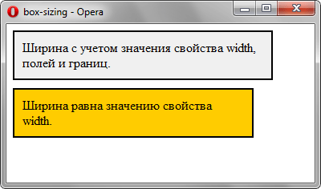

box-sizing
Применяется для изменения алгоритма расчёта ширины и высоты элемента.
Согласно спецификации CSS ширина блока складывается из ширины контента (width), значений отступов (margin), полей (padding) и границ (border). Аналогично обстоит и с высотой блока. Свойство box-sizing позволяет изменить этот алгоритм, чтобы свойства width и height задавали размеры не контента, а размеры блока.
Краткая информация
| Значение по умолчанию | content-box |
|---|---|
| Наследуется | Нет |
| Применяется | Ко всем элементам |
Синтаксис
box-sizing: content-box | border-box | padding-boxЗначения
- content-box
- Основывается на стандартах CSS, при этом свойства width и height задают ширину и высоту контента и не включают в себя значения отступов, полей и границ.
- border-box
- Свойства width и height включают в себя значения полей и границ, но не отступов (margin). Эта модель используется браузером Internet Exporer в режиме совместимости.
- padding-box
- Свойства width и height включают в себя значения полей, но не отступов (margin) и границ (border).
Пример
<!DOCTYPE html>
<html>
<head>
<meta charset="utf-8">
<title>box-sizing</title>
<style>
.box1 {
background: #f0f0f0; /* Цвет фона */
width: 300px; /* Ширина блока */
padding: 10px; /* Поля */
border: 2px solid #000; /* Параметры рамки */
}
.box2 {
background: #fc0; /* Цвет фона */
width: 300px; /* Ширина блока */
padding: 10px; /* Поля */
margin-top: 10px; /* Отступ сверху */
border: 2px solid #000; /* Параметры рамки */
box-sizing: border-box; /* Ширина блока с полями */
}
</style>
</head>
<body>
<div class="box1">Ширина с учетом значения свойства width, полей и границ.</div>
<div class="box2">Ширина равна значению свойства width.</div>
</body>
</html>В данном примере ширина первого слоя будет равна 324 пиксела, поскольку она складывается из значения ширины контента (width), полей слева и справа (padding) и толщины границ (border). Ширина второго слоя равняется 300 пикселов за счет применения свойства box-sizing. Результат примера в браузере Opera показан на рис. 1.

Рис. 1. Ширина блоков
Объектная модель
Объект.style.boxSizing
Примечание
Firefox до версии 29 поддерживает нестандартное свойство -moz-box-sizing.
Safari до версии 5.0, Chrome до версии 10.0, Android до версии 4.0 поддерживают нестандартное свойство -webkit-box-sizing.
Спецификация
| Спецификация | Статус |
|---|---|
| CSS Basic User Interface Module Level 3 | Рабочий проект |
Браузеры
| Internet Explorer | Chrome | Opera | Safari | Firefox | ||||
| content-box, border-box | 8 | 1 | 10 | 7 | 3 | 5.1 | 1 | 29 |
| padding-box | 1 | |||||||
| Android | Firefox Mobile | Opera Mobile | Safari Mobile | ||||
| content-box, border-box | 1 | 2.1 | 1 | 29 | 9 | 3 | 5,1 |
| padding-box | 1 | ||||||